Геодезичні роботи
Інженерно-геологічні вишукування
Містобудівне і лінійне проектування
топографія, інженерна геодезія, маркшейдерія, аерофотозйомка, геологія для будівництва і реконструкції, розробка генеральних планів, проектування автодоріг, підземних і наземних комунікацій, високовольтних ЛЕП
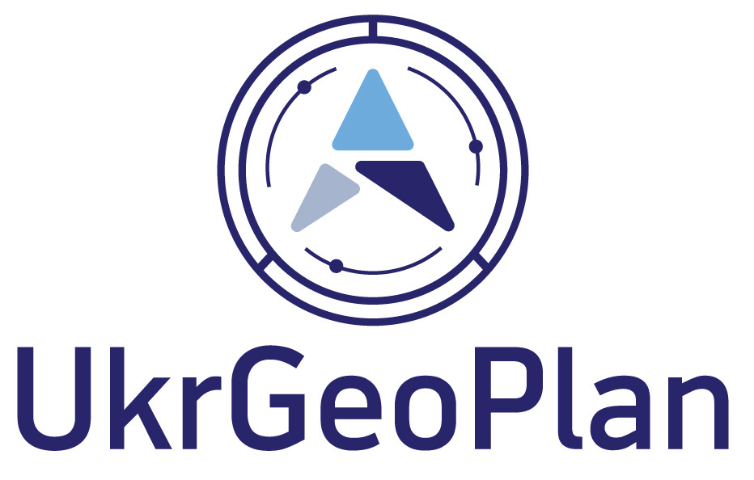
ТОВ "УКРГЕОПЛАН" - компанія надає широкий спектр послуг з геологічним і геодезичних вишукувань.
У нашій компанії працюють фахівці, у яких, сумарний досвід роботи, в сфері досліджень, становить 150 років.
Ми використовуємо сучасне обладнання, яке пройшло всі необхідні метрологічні дослідження, що підтверджено відповідними сертифікатами.
Серед наших клієнтів:
Коростишівська міська рада, Прохорівська сільська рада, ПрАТ "Кременчуцький річковий порт", ДП "НЕК" Укренерго ", ТОВ" НІКОПРОГРЕСБУД ", КРЮКІВСЬКЕ КАР'ЄРОУПРАВЛІННЯ. СТРУКТУРНИЙ ПІДРОЗДІЛ ЮЗД 5. ПАТ" Укрграфіт ", та ін.
У нашій компанії працюють фахівці, у яких, сумарний досвід роботи, в сфері досліджень, становить 150 років.
Ми використовуємо сучасне обладнання, яке пройшло всі необхідні метрологічні дослідження, що підтверджено відповідними сертифікатами.
Серед наших клієнтів:
Коростишівська міська рада, Прохорівська сільська рада, ПрАТ "Кременчуцький річковий порт", ДП "НЕК" Укренерго ", ТОВ" НІКОПРОГРЕСБУД ", КРЮКІВСЬКЕ КАР'ЄРОУПРАВЛІННЯ. СТРУКТУРНИЙ ПІДРОЗДІЛ ЮЗД 5. ПАТ" Укрграфіт ", та ін.
Геодезичні роботи
Топографія
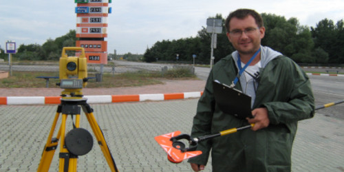
Наша компанія виконує топографо-геодезичні зйомки масштабів 1:500, 1:1000, 1:2000, 1:5000. Топографічні плани М1: 500 використовуються як основа для різних проектів, від приватного будинку до великих промислових об'єктів. Для створення генеральних планів населених пунктів та детальних планів територій застосовуються зйомки масштабу 1:2000, 1:5000, чим більше населений пункт, тим дрібніше вибирається масштаб.
Інженерна геодезія
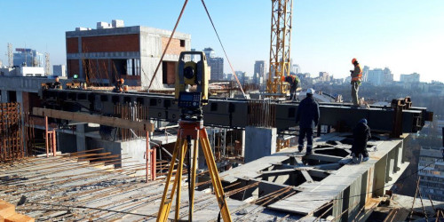
Геодезичний супровід будівництва: створення геодезичної розбивочної основи, винос осей будівель і споруд, замір і підрахунок обсягів земляних робіт, складання виконавчої документації. Інженерна геодезія включає в себе не тільки супровід будівництва але і такі види робіт: спостереження за зрушеннями та деформаціями, визначення крену (відхилення від вертикальності) споруд, планово-висотна зйомка підкранових колій, вивірка технологічного обладнання.
Маркшейдерські роботи
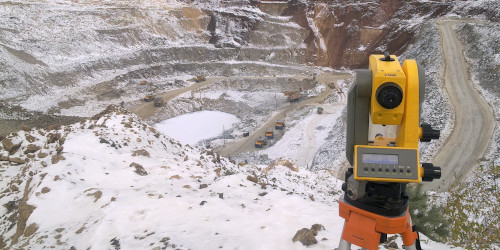
Маркшейдерія - це, розділ інженерної геодезії, яка займається супроводом і обслуговуванням гірничого виробництва. Замір і визначення обсягів гірничих робіт, замір і визначення обсягів сировини (корисної копалини) на складі або в штабелі, щомісячний, щоквартальний і річний заміри, установка і вивірка технологічного обладнання
Аэрофотозйомка
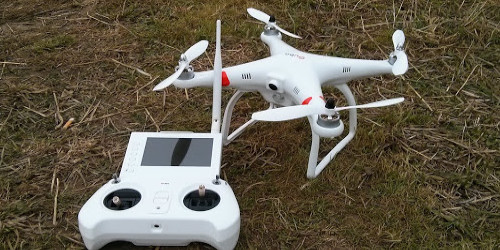
Аерофотозйомка місцевості - це комплекс робіт, що включає різні етапи, від фотозйомки місцевості з безпілотного літального апарату, до отримання цифрових фотознімків, на основі яких створюються фотосхеми і ортофотоплани місцевості. Точність ортофотопланів виготовлених фахівцями нашої компанії задовольняє вимогам геодезії, топографії та кадастру, а створені 3D моделі місцевості дозволяють швидко оцінити обсяг і площу будівельних робіт, робіт з видобутку корисних копалин і т.п.
Геологічні роботи
Геологія ділянки
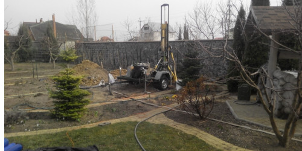
Геологічні вишукування також необхідні при різних видах проектування. Особливо при проектуванні приватного будинку на ділянці, інженерно-геологічні вишукування необхідні, для визначення фізико механічних властивостей ґрунтів, рівня ґрунтових вод і т.д. Наша компанія виконує геологічні вишукування згідно з усіма державними будівельними нормами і завжди гарантує якісний результат.
Геологія для будівництва будівель і споруд
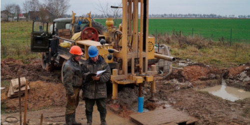
Для будівництва промислових об'єктів, при дослідженні грунтів, буряться більш глибокі свердловини від 10 до 25 метрів, складається програма інженерно-геологічних робіт, застосовуються різні схеми розташування свердловин для найбільш коректного опису геологічної ситуації і як наслідок усього перерахованого вище, звіт про інженерно геологічні дослідження несе більш розгорнуту інформацію про будову геологічної товщі грунтів.
Геологія для реконструкції будівель і споруд

Реконструкція будівель і споруд неможлива без спеціального проекту. Складати його можна тільки після виконання попередніх досліджень. Інженерно-геологічні вишукування для реконструкції будівлі мають свою особливу специфіку, і проводяться нашими фахівцями в повній відповідності з вказівками і рекомендаціями, прописаними в нормативних документах.
Геологiя для СЭС
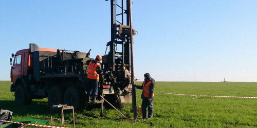
Особливістю дослідження для проектування СЕС, є, дослідження геологічної будови ґрунтів на площадних ділянках. Побудова достовірної моделі грунтів на території СЕС - це найважливіше завдання для геолога. Наші фахівці виконують якісно роботи, як польові, так і камеральні. В результаті чого, всі наші замовники отримують достовірні дані, для виконання проектів.
Геологія для будівництва наземних і підземних комунікацій
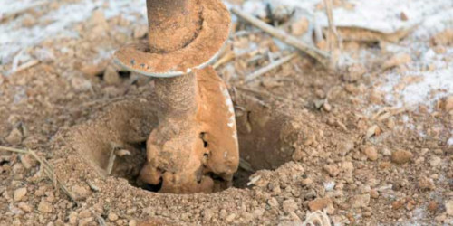
Інженерно-геологічні вишукування для будівництва наземних і підземних комунікацій можна віднести до лінійної геології, тобто геологія виконувана на протяжних трасах. Особливістю лінійних об'єктів є досить велика протяжність і приуроченість до кількох геоморфологическим елементів, що призводить до збільшення обсягів лабораторних і камеральних робіт. Кількість і розташування свердловин регламентується нормативними документами і залежить від кількості поворотів траси, наявності насипів, переходів через водні об'єкти і т.п. Обсяг і склад робіт залежить від протяжності об'єкта. На характер робіт впливають інженерно-геологічні умови, особливості фундаменту або глибина закладення трас і споруд, геологічні будова території. Наша компанія має досвід у виконанні робіт такого рівня складності і надає якісний і коректний результат.
Проектування
Розробка генеральних планів населених пунктів
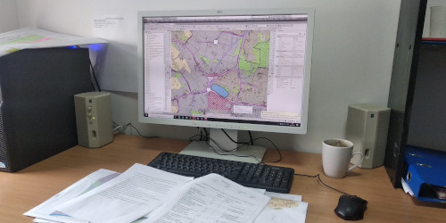
Розробка генерального плану процес делікатний і вимагає знання будівельних норм, державних стандартів, законодавства в сфері проектування. Проектна група нашої компанії володіє всіма необхідними знаннями для розробки генерального плану, а також для захисту на містобудівній раді.
Розробка детального плану населеного пункту або окремої території
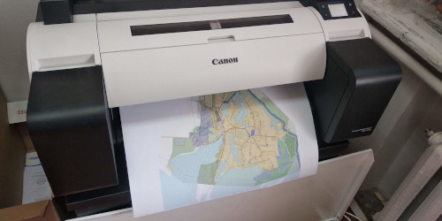
Детальний план розробляється для населених пунктів чисельністю до 50 тис. населення, а також для територій обмежених магістралями, вулицями, магістральними інженерними мережами або елементами ландшафту. Детальний план представляє з себе пакет документів який подається на розгляд до містобудівної ради. Наша компанія займається не тільки розробкою детальних планів, але і повним супроводом проекту до його захисту.
Проходження експертизи проекту та отримання експертного висновку
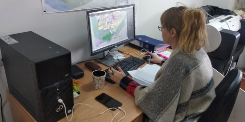
Будь-яка проектно-вишукувальних компанія стикається з необхідністю проходити експертизу проекту, в відповідних організаціях. Фахівці нашої компанії можуть підготувати необхідний пакет документів для виходу на експертизу, а також виконати повний супровід по процедурі отримання експертного висновку.
Партнери
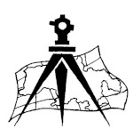

Наші контакти
Телефон: +38 099 045 56 40 (viber)
Почта: ukrgeoplan@gmail.com
Почта: ukrgeoplan@gmail.com
м. Дніпро вул. Воскресенська 41 офіс 502
Графік роботи:
Понеділок - П'ятниця
8.00-18.00
Сб. Вс. вихідний